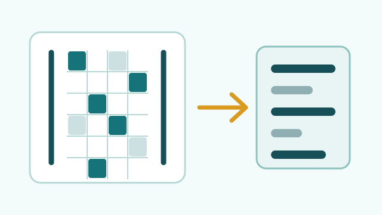
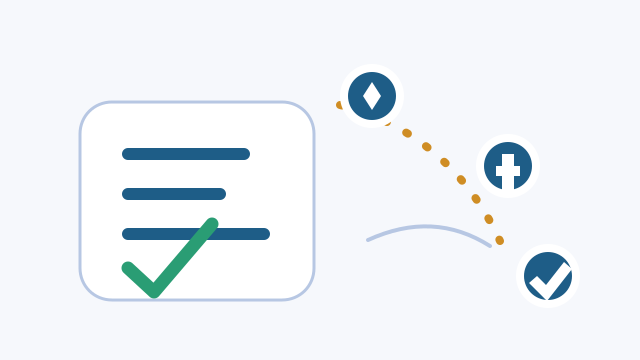
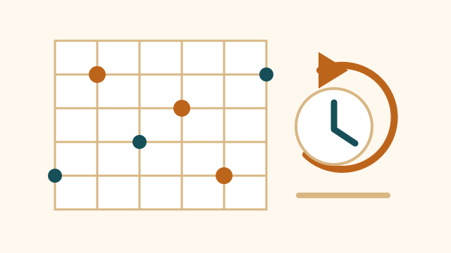
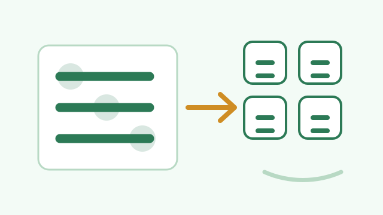
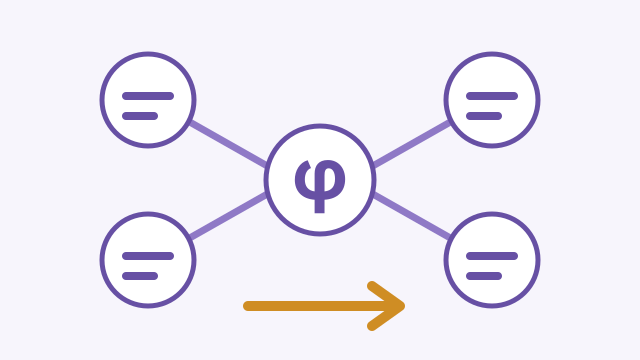

mex_linear_algebra
Optimized MATLAB MEX functions for GF(2) linear algebra. The library covers bit-packed matrix multiplication, null-space computation, and rank calculation, with AVX/OpenMP acceleration where available.
Pinned on GitHub
A snapshot of the repositories currently pinned on my GitHub profile: research simulators, numerical tools, and a few C++ systems projects.

Optimized MATLAB MEX functions for GF(2) linear algebra. The library covers bit-packed matrix multiplication, null-space computation, and rank calculation, with AVX/OpenMP acceleration where available.

An opinionated fork of ApplyPilot for job discovery and application workflows. This fork narrows discovery to official employer and academic sources, adds safer review-first flows, and keeps a firm-centric dashboard for triage.

End-to-end implementation of the random plaquette model and a rejection-free continuous-time Monte Carlo sampler. It uses event-driven BKL/Gillespie dynamics and Fenwick-tree event selection for large parameter sweeps.

An experimental header-only C++20 thread pool built around std::jthread, a
Michael-Scott MPMC queue, hazard pointers, cooperative cancellation, and sanitizer-backed
stress tests.
A small automatic harness for algorithm practice. It deduces input types from a function signature, generates randomized cases, and compares a user solution against a reference implementation.

A minimal out-of-tree LLVM new-pass-manager plugin for arithmetic constant folding and redundant phi-node elimination. The project is intentionally small, aimed at learning LLVM's pass-builder interface and SSA manipulation.